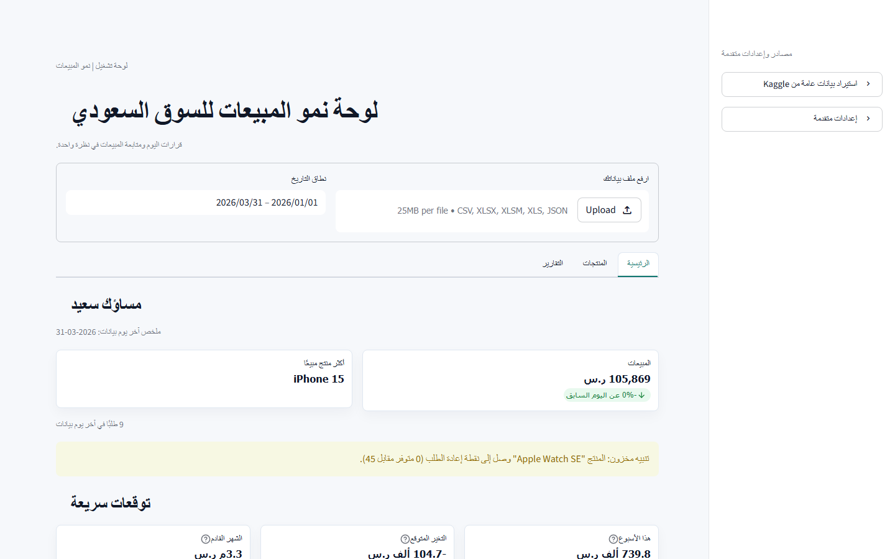

Case Study · Commercial Analytics
Retail data becomes a daily decision system.
An Arabic-first analytics product for Saudi retailers that converts familiar sales files and connected order data into KPIs, profitability views, inventory alerts, forecasts, and export-ready reports.
RoleProduct strategy, analytics & development
ProductArabic retail intelligence dashboard
AudienceSaudi retailers and operators
StatusPrivate product · Beta-ready

01 · The challenge
Retail data is available, but often scattered across files, sheets, and platforms.
Small and growing retailers frequently work with exports from spreadsheets, marketplaces, and commerce platforms. Column names vary, supporting information lives on separate sheets, and a useful answer requires repeated cleaning and calculation.
The product needed to shorten the journey from uploading data to understanding sales, profit, stock pressure, customer behavior, and what may happen next.
The dashboard was designed around operational decisions: what is growing, where profit is coming from, which stock needs attention, and what the team should examine next.
02 · Product scope
Flexible intake, broad analysis, and outputs that teams can keep using.
03 · What I built
A commercial analytics product—not just a collection of charts.
Adaptive data intake
CSV and multi-sheet Excel imports, public Kaggle datasets, and Salla order synchronization feed a common model with automatic Arabic and English column matching.
Operating intelligence
Sales, orders, average order value, profit, margin, VAT, targets, ABC analysis, channel performance, customer views, and reorder alerts support daily reviews.
Forecasts and reporting
Product-aware forecasts, smart observations, cleaned-data exports, focused CSV reports, and a comprehensive Excel workbook make the analysis portable.
04 · Product flow
Designed to move from a business file to an actionable review.
- 01Connect
Upload a file, import a public dataset, or synchronize orders from a connected Salla store.
- 02Map
Recognize familiar Arabic and English columns and standardize dates, sales, costs, products, customers, and stock.
- 03Analyze
Calculate performance, profitability, targets, product contribution, geographic patterns, customer mix, and inventory risk.
- 04Act
Review forecasts and recommendations, then export the relevant report or cleaned dataset for the next workflow.
05 · Engineering
Structured for private customer data and a path beyond the MVP.
The codebase separates configuration, loading, analytics, forecasting, reports, interface components, tenant access, and platform integrations. Automated tests cover analytics, data imports, Salla transformations, and tenant flows, while Docker and Streamlit deployment paths support repeatable demos and releases.
Next case study